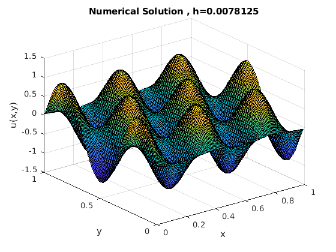
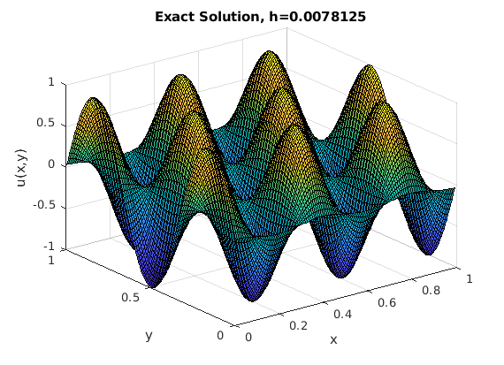
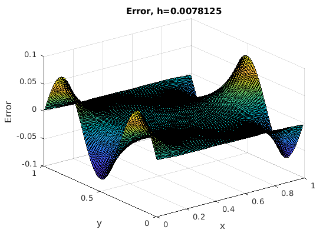

a2 =0; b2 = 1;
m = 128;
f1 = @(x,y) -34*(pi^2)*cos(5*pi*x).*sin(3*pi*y);
uexact = @(x,y) cos(5*pi*x).*(sin(3*pi*y));
h = (b2-a2)/(m);
w = 2/(1+sin(pi*h));
tol = 10^(-8);
maxiter = 10000;
[x,y] = meshgrid(((1:m)-1/2)*h);
dx = 1:m;
dy = 1:m;
u = zeros(m,m);
f = feval(f1,x(dy,dx),y(dy,dx));
for k = 0:maxiter
u(:,1) = u(:,2) - (h^2)*f(:,1);
u(:,m) = u(:,m-1) - (h^2)*f(:,m);
u(1,:) = (1/3)*(u(2,:)-(h^2)*f(1,:));
u(m,:) = (1/3)*(u(m-1,:) - (h^2)*f(m,:));
for j = 2:(m-1)
for i = 2:(m-1)
u(i,j) = (1-w)*u(i,j)+(w/4)*(u(i-1,j)+u(i+1,j)+u(i,j-1)+u(i,j+1)-(h^2)*f(i,j));
end
end
residual = zeros(m,m);
for j = 2:(m-1)
for i = 2:(m-1)
residual(i,j) = -4*u(i,j)+(u(i-1,j)+u(i+1,j)+u(i,j-1)+u(i,j+1)-(h^2)*f(i,j));
end
end
if norm(residual(:),2)<tol*norm(f(:),2)
break
end
end
error = uexact(x,y) - u;
L2 = R2Norm(error,uexact(x,y));
p=polyfit(log(h),log(L2),1);
p
figure, set(gcf,'DefaultAxesFontSize',10,'PaperPosition', [0 0 3.5 3.5]),
surf(x,y,u), xlabel('x'), ylabel('y'), zlabel('u(x,y)'),
title(strcat('Numerical Solution , h=',num2str(h)));
figure, set(gcf,'DefaultAxesFontSize',10,'PaperPosition', [0 0 3.5 3.5]),
surf(x,y,uexact(x,y)), xlabel('x'), ylabel('y'), zlabel('u(x,y)'),
title(strcat('Exact Solution, h=',num2str(h)));
figure, set(gcf,'DefaultAxesFontSize',10,'PaperPosition', [0 0 3.5 3.5]),
surf(x,y,u-uexact(x,y)),xlabel('x'),ylabel('y'), zlabel('Error'),
title(strcat('Error, h=',num2str(h)));
function L2 = R2Norm(error, uexact)
R = error .^2;
u_ex = uexact.^2;
L2 = sqrt(sum(R,'all')/sum(u_ex,'all'));
end
Warning: Polynomial is not unique; degree >= number of data points.
p =
0.6812 0
  